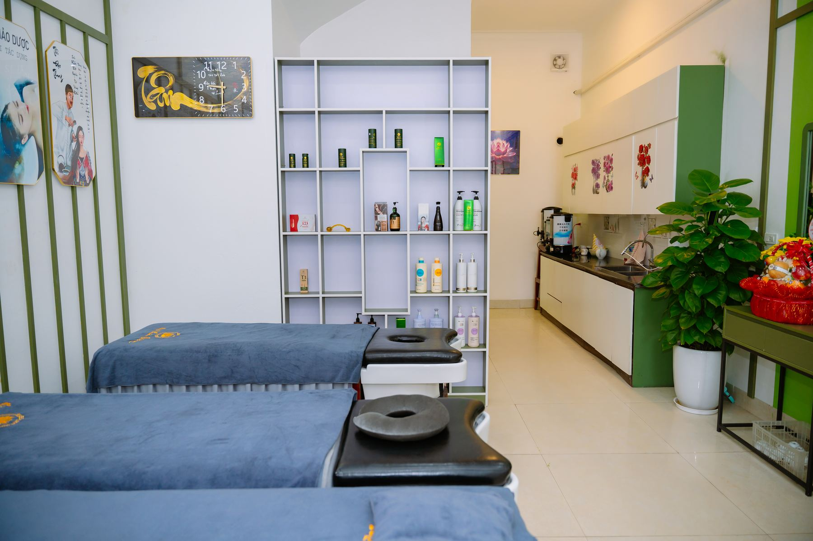

CHỌN ĐIỀU CƠ THỂ CẦN
Dịch vụ tại Hồi Xuân Đường
 CHĂM SÓC CƠ THỂ
CHĂM SÓC CƠ THỂBấm huyệt & chăm sóc cổ vai gáy
Chăm sóc vùng cổ, vai, gáy; trao đổi với kỹ thuật viên để lựa chọn liệu trình phù hợp.
Thông tin liệu trình +
Trao đổi nhu cầu trước khi thực hiện. Có thể kết hợp cạo gió hoặc giác hơi sau khi được tư vấn. Thời lượng và chi phí xác nhận theo nội dung lựa chọn.
GIÁ DỊCH VỤLiên hệ báo giá↗
 DƯỠNG SINH THẢO DƯỢC
DƯỠNG SINH THẢO DƯỢCXông hơi thảo dược
Một khoảng thư giãn với thảo dược, dành cho những ngày cơ thể cần được nghỉ ngơi.
Thông tin liệu trình +
Đội ngũ tư vấn trao đổi về thể trạng, hình thức xông hơi và các lưu ý trước khi thực hiện. Liên hệ để biết thời lượng và mức giá hiện tại.
GIÁ DỊCH VỤLiên hệ báo giá↗
 CHĂM SÓC SẮC ĐẸP
CHĂM SÓC SẮC ĐẸPChăm sóc da & sắc vóc
Khám phá cách chăm sóc làn da, kết hợp thời gian thư giãn trong không gian riêng tư.
Thông tin liệu trình +
Tư vấn theo nhu cầu chăm sóc da và sắc vóc. Các bước, sản phẩm sử dụng và chi phí được trao đổi trước khi bạn quyết định lựa chọn.
GIÁ DỊCH VỤLiên hệ báo giá↗
 TƯ VẤN CÁ NHÂN
TƯ VẤN CÁ NHÂNDưỡng sinh & dinh dưỡng
Trao đổi về thói quen sinh hoạt và nhu cầu chăm sóc để xây dựng hướng dưỡng sinh phù hợp.
Thông tin tư vấn +
Chia sẻ mục tiêu chăm sóc, thói quen hằng ngày và những điều bạn quan tâm. Đội ngũ tư vấn sẽ giải đáp về dịch vụ, sản phẩm và các lựa chọn phù hợp tại cơ sở.
CHI PHÍ TƯ VẤNLiên hệ báo giá↗
Hình ảnh giới thiệu không gian và hoạt động tại cơ sở. Ảnh riêng cho từng liệu trình sẽ được bổ sung.
ƯU ĐÃI TRẢI NGHIỆM
Ưu đãi trải nghiệm
GÓI TRẢI NGHIỆM
Khởi động hành trình dưỡng sinh
Cổ vai gáy · Mặt ngọc · Lưng eo · Vùng đầu · Đắp thuốc
Tư vấn gói này ↗VOUCHER
Món quà thư giãn cho người thân
Thiết kế cho dịp sinh nhật, lễ tết hoặc lời cảm ơn đặc biệt.
Nhận tư vấn ↗SỰ KIỆN THEO MÙA
Tuần lễ hồi xuân / workshop thảo dược
Khu vực để cập nhật chương trình theo tháng, theo mùa hoặc chiến dịch riêng.
Xem chương trình ↗
DÀNH THỜI GIAN CHO CHÍNH MÌNH
Bắt đầu với
gói trải nghiệm.
Khám phá 5 liệu trình chăm sóc, từ cổ vai gáy đến vùng đầu. Để đội ngũ Hồi Xuân Đường giúp bạn lựa chọn.
Tư vấn gói trải nghiệm ↗Liên hệ để biết giá và ưu đãi đang áp dụng.CHĂM DƯỠNG MỖI NGÀY
Thảo dược cho nhịp sống an lành
Khám phá các nhóm sản phẩm chăm sóc tại nhà. Danh mục, hình ảnh và giá bán đang được hoàn thiện.

 Phạm Văn Hùng
Phạm Văn HùngNhà sáng lập & Giám đốc
CÂU CHUYỆN HỒI XUÂN ĐƯỜNG
Tinh hoa truyền thống.
Chăm sóc bằng sự tận tâm.
Hồi Xuân Đường mang tinh thần dưỡng sinh Đông y vào nhịp sống hiện đại, qua những liệu trình chăm sóc cơ thể, sắc đẹp và sản phẩm thảo dược.
Từ không gian xanh dịu đến từng cuộc trò chuyện, chúng tôi mong mỗi lần ghé thăm là một khoảng thời gian bạn dành trọn cho mình.
Tư vấn theo nhu cầuTrao đổi trước khi chọn liệu trình.
Không gian riêng tưAn yên để nghỉ ngơi, chăm dưỡng.
MỘT ĐIỂM HẸN AN YÊN
Hệ thống cơ sở Hồi Xuân Đường
Bãi Cháy
955, Tổ 2 Khu 10, Bãi Cháy,
Hạ Long, Quảng Ninh
Monbay
A1205, KĐT Monbay, phường Hồng Hà,
Hạ Long, Quảng Ninh
Cẩm Phả
Chi nhánh đang chuẩn bị cập nhật địa chỉ.
Nhận tư vấn trước khi khai trương.
Sắp cập nhậtQuan tâm cơ sở này
Uông Bí
Khu vực mở rộng hệ thống trong thời gian tới.
Thông tin chính thức sẽ bổ sung sau.
Sắp cập nhậtQuan tâm cơ sở này
Vân Đồn
Điểm chờ mở rộng để hệ thống dễ thêm chi nhánh.
Địa chỉ sẽ được cập nhật khi sẵn sàng.
Sắp cập nhậtQuan tâm cơ sở này
Tôi nên chọn liệu trình nào? +
Bạn có thể bắt đầu từ nhóm nhu cầu ở phần Dịch vụ. Nếu chưa chắc chắn, hãy chọn “Cần tư vấn lựa chọn” khi chuẩn bị yêu cầu để đội ngũ trao đổi cùng bạn.
Làm thế nào để biết giá dịch vụ? +
Bảng giá chính thức đang được cập nhật. Chọn dịch vụ bạn quan tâm để hỏi mức giá, thời lượng và nội dung gói hiện tại qua hotline hoặc Zalo.
Có cần đặt lịch trước khi đến không? +
Bạn nên liên hệ trước để đội ngũ xác nhận cơ sở và thời gian phù hợp. Lịch hẹn chỉ được xác nhận sau khi trao đổi với Hồi Xuân Đường.
Có thể mua sản phẩm chăm sóc tại nhà không? +
Bạn có thể hỏi đội ngũ tư vấn về sản phẩm thảo dược hiện có, thông tin sử dụng và giá bán. Danh mục trên website đang được hoàn thiện.
HỒI XUÂN ĐƯỜNG ĐÓN BẠN
Một cuộc hẹn.
Thêm một chút an yên.
Chọn dịch vụ và cơ sở bạn quan tâm, rồi trao đổi cùng chúng tôi để xác nhận mức giá và lịch hẹn.
0912 994 888 ↗08:00 – 20:00 mỗi ngày